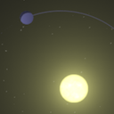
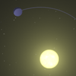
 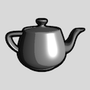
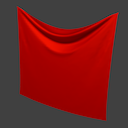
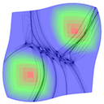
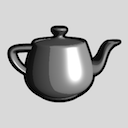
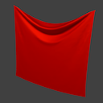
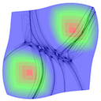
Iconoir


Minimalist user interface for Android. Thanks to a complex system of inter-app communication, it does not require a rooted device. Developed independently, with guidance from the UC Berkeley startup community.
Type: Hobby
Skills: Java, Android, Adobe Suite
Links: Google Play, GitHub
PolitiChat

Worked with a project group to address the course theme: "bridging the political divide." We developed a web application to discuss controversial political issues with the humanizing influence of face-to-face interaction.
Type: Coursework
Course: CS 260 User Interfaces, UC Berkeley
Skills: Javascript, Node, MongoDB
Links: GitHub
Fortune's Algorithm

Implemented Fortune's algorithm to generate Voronoi diagrams for the Godot game engine. A Voronoi diagram partitions a plane into regions defined by the nearest of a set of points, similar to the growth of minerals or biological cells. This algorithm uses a sweeping line to gradually triangulate the corners of those regions.
Type: Hobby
Skills: C++, Godot
Links: GitHub
Fast Text Bubble Renderer
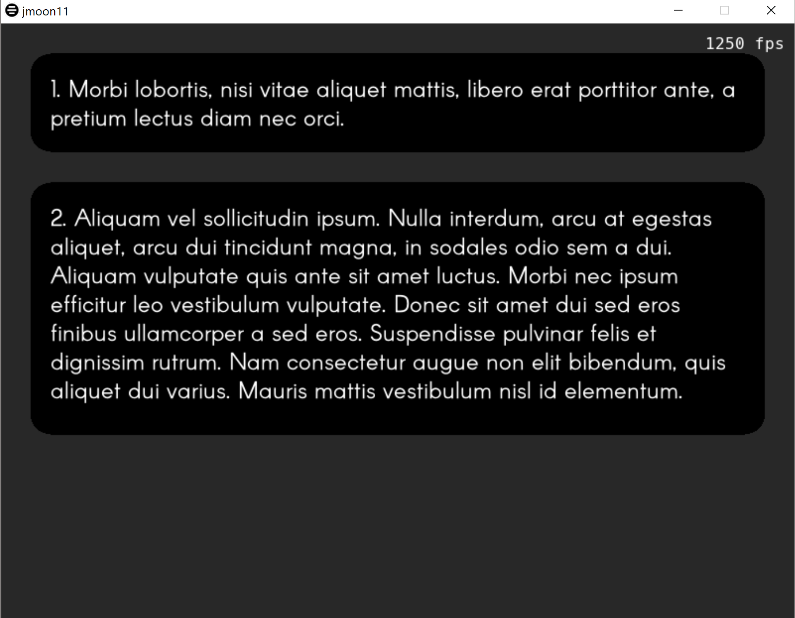Fast text rendering engine application using SDL2. Reads and displays text data from XML. Animated to behave similarly to modern text messaging programs. Primary goal was high performance across a range of platforms.
Type: Hobby
Skills: C++, SDL
Links: GitHub
Video Game Mockup
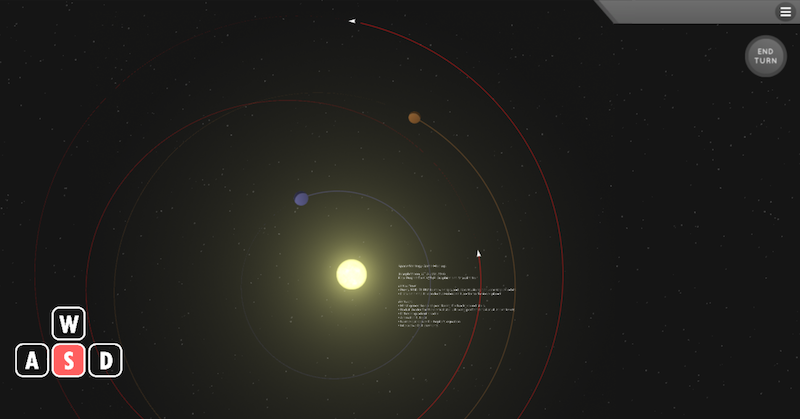Created an interactive mockup of a space-themed video game. Includes an animated tutorial and custom 2D glow shader.
Type: Coursework
Course: CS 324 Visualization, UT Austin
Skills: C#, Unity, HLSL
Links: GitHub
Parallel Algorithm for Minesweeper
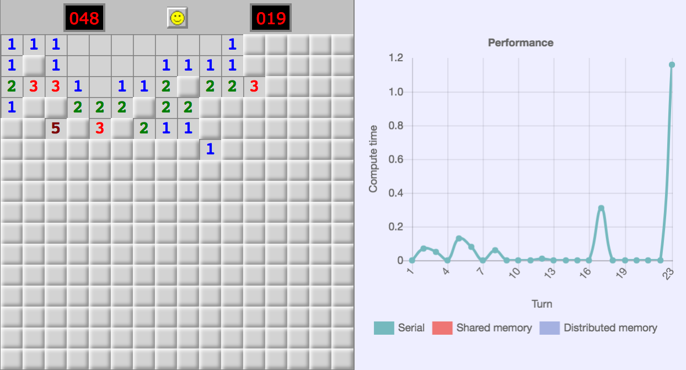Worked with a small group to develop a parallelized solving algorithm for Minesweeper. Our algorithm defines board state as a constrained linear problem and proposes all feasible solutions. Using Python's native multiprocessing library or MPI, we then distribute feasible solutions between processors and determine the probability of a mine on each tile. Combining these results, we can rapidly find the optimal tile to clear. In addition, we built a web application to display the algorithm's performance.
Type: Coursework
Course: CS 267 Parallel Computing, UC Berkeley
Skills: Python, MPI, Javascript
Interactive Machine Learning
Worked with a project group and faculty mentor to develop interactive visualization tools for convolutional neural networks. We used a generative adversarial network to create "realistic" images that would strongly activate a network. Together with real-time controls, this helps developers better understand the behavior of a network during training and deployment.
Type: Coursework
Course: Capstone Project, UC Berkeley
Skills: Python, TensorFlow
Sketch Reconstruction

Drawing inspiration from Google's SketchRNN, our project group implemented a variational autoencoder to reconstruct rasterized sketch images. We jointly trained two neural networks - one to encode images into a latent vector and another to decode them. Then using the decoder network, we are able to generate novel images based on variables in the latent vector.
Type: Coursework
Course: CS 289 Machine Learning, UC Berkeley
Skills: Python, TensorFlow
Parallel Particle Simulation

Implemented shared memory, distributed memory, and GPU parallelism for a simple particle simulation.
Type: Coursework
Course: CS 267 Parallel Computing, UC Berkeley
Skills: C++, OpenMP, MPI, CUDA
Links: Report
Cloth Simulation
 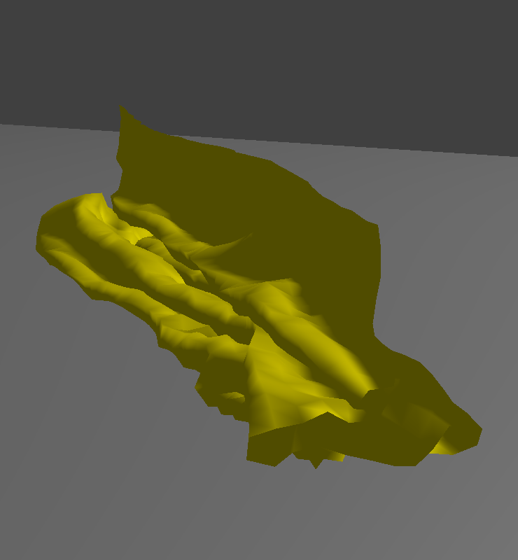
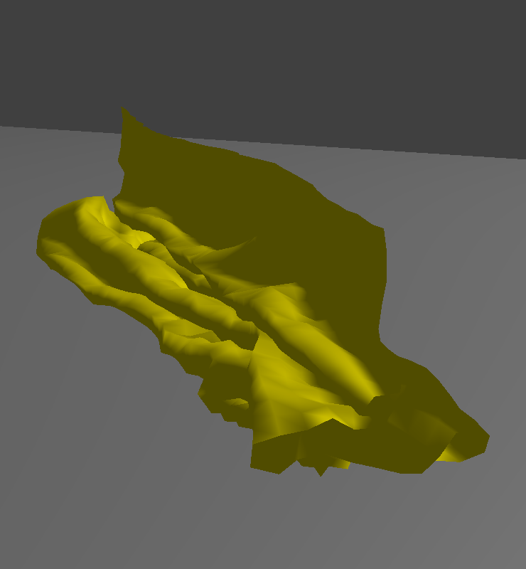
Implemented a spring-based cloth simulation. Includes folding and physics collisions.
Type: Coursework
Course: CS 284 Graphics, UC Berkeley
Skills: C++, OpenGL
Links: Report
Real-time 2D Raytracing
Developed a 2D raytracing algorithm that runs in real-time. By writing shaders to take advantage of parallel ray-bundles, it is possible to calculate thousands of intersections at minimal computational cost. Unfortunately, texture sampling is too expensive for this algorithm to be practical for complex scenes.
Type: Coursework
Course: CS 284 Graphics, UC Berkeley
Skills: Javascript, WebGL, GLSL
3D Raytracing Renderer

Implemented a raycasting renderer with many features. These include caustics, importance sampling, microfacet materials, depth of field, and many others.
Type: Coursework
Course: CS 284 Graphics, UC Berkeley
Skills: C++, OpenGL
Links: Report
Shader Exercises

Mesh Editor
Implemented features of a 3D mesh editor. Includes Bezier surfaces, mesh restructuring, and loop subdivision.
Type: Coursework
Course: CS 284 Graphics, UC Berkeley
Skills: C++, OpenGL
Links: Report
Rasterizer

Wrote a rasterizer for SVG and texture data. Implemented screen rasterization techniques, such as supersampling, bilinear interpolation, and mip-mapping.
Type: Coursework
Course: CS 284 Graphics, UC Berkeley
Skills: C++, OpenGL
Links: Report